Image Handling
image-handling.Rmd1. Introduction
Spatial transcriptomic output often comes with a histology image. SPATA2 offers many functions for histology specific analysis. Therefore, detailed interaction between image dimensions and extent and data point positions in form of data coordinates is required. This vignette introduces the basic functions that ensure alignment between image and data point coordinates and that allow to exchange low- and high resolution image that come with any 10X Visium output. Furthermore, it elaborates on how images are stored in SPATA2.
library(SPATA2)
library(SPATAData)
library(tidyverse)
# load SPATA2 inbuilt example data
object_t275 <- loadExampleObject("UKF275T")
object_t275 <- setDefault(object_t275, display_image = TRUE, pt_size = 1.5)2. Basic image handling
The following exemplifies how to use basic image related functions.
2.1 Extracting image data
To obtain the image, that is currently set as well as meta
information there exist several functions prefixed with
getImage*(). To name a few:
# the image
getImage(object_t275)
## Image
## colorMode : Color
## storage.mode : double
## dim : 576 600 3
## frames.total : 3
## frames.render: 1
##
## imageData(object)[1:5,1:6,1]
## [,1] [,2] [,3] [,4] [,5] [,6]
## [1,] 1 1 1 1 1 1
## [2,] 1 1 1 1 1 1
## [3,] 1 1 1 1 1 1
## [4,] 1 1 1 1 1 1
## [5,] 1 1 1 1 1 1
# image dimensions in width, height and colors
getImageDims(object_t275)
## [1] 576 600 3
# image range in terms of data coordinates
getImageRange(object_t275)
## $x
## [1] 1 576
##
## $y
## [1] 1 6002.2 Plotting images
The function plotImage() visualizes the image. The
arguments xrange and yrange can be used to
zoom in on specific regions.
plotImage(object_t275) +
ggpLayerRect(object_t275, xrange = c(200, 400), yrange = c(200, 400))
plotImage(object_t275, xrange = c(200, 400), yrange = c(200, 400))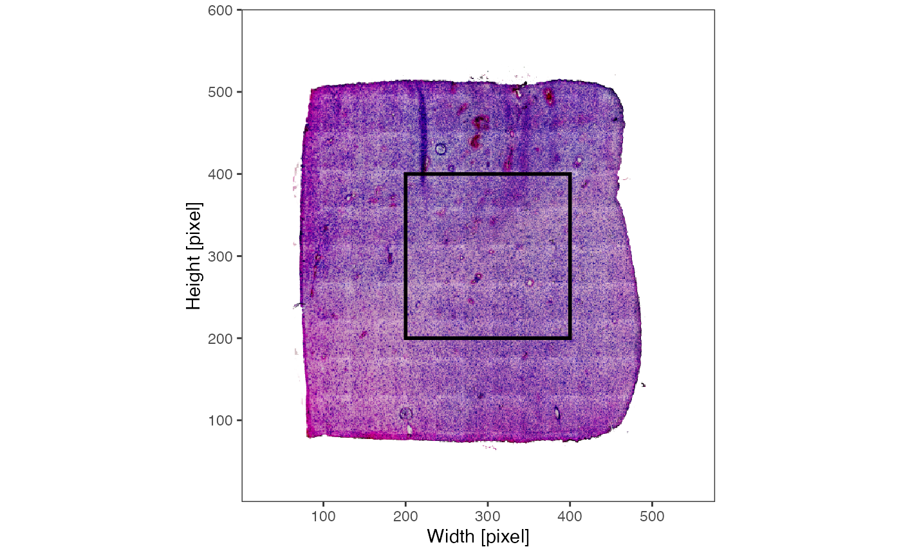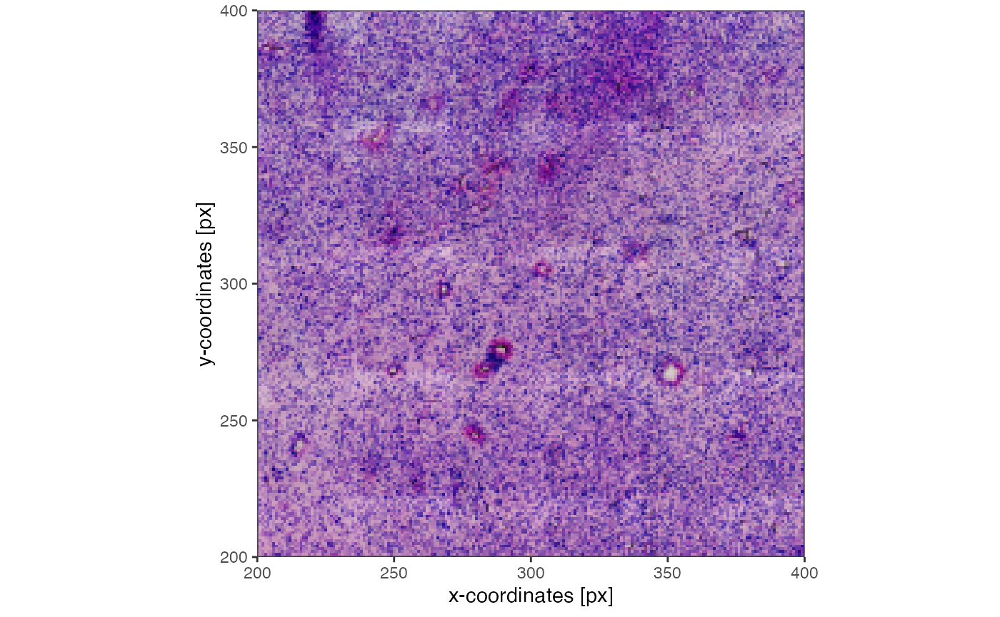
As detailed below, SPATA2 allows to store multiple images. The names of
the images currently registered in the SPATA2 object can be
obtained by getImageNames(). They can be easily
renamed.
# right now, this object contains two registered images
getImageNames(object_t275)## [1] "image1" "very_low_res"
getImageDims(object_t275, img_name = "image1")## [1] 576 600 3
# but image1 is quite an uninformative name - lets rename it
object_t275 <-
renameImage(object_t275, img_name = "image1", new_img_name = "normres")
getImageNames(object_t275)## [1] "normres" "very_low_res"3. Registering new images
To integrate additional images in the workflow they must be
registered for the SPATA2 object to know them. Registering
a new image means that a new container for the respective image is
created. (For more details on these containers read the documentation of
the classes SpatialData and HistoImage).
As a first example, we register the high resolution image which the
Visium platform always provides, usually named somewhat like
spatial/tissue_hires_image.png. If you have not already
registered the high resolution image with
initiateSpataObjectVisium() you can do that with
registerImage(). Lets register the high resolution image
which you can download here.
object_t275 <-
registerImage(
object = object_t275,
img_name = "hires", # the future name of the image
dir = "data/UKF275T_tissue_hires_image.png" # adjust to your directory
)
# a third image has been registered
getImageNames(object_t275)## [1] "normres" "very_low_res" "hires"Generally speaking, registering an image means to set up the
container for the image and deposit a directory from where to read it.
We recommend to register images with their file directory, since storing
multiple images in the SPATA2 object lets the object grow
in storage size quickly. This way, the file directory is used to load
the image everytime the image is required.
# the hires image alone needs almost 100mb
getImage(object_t275, img_name = "hires") %>%
pryr::object_size()## 92.26 MBNote, that in the previous code chunk the argument
img_name was specified to obtain the image. In the code
chunk where we exemplified plotImage() the image name was
not specified. In that case the SPATA2 object defaults to
the active image.
# check which image is currently active
activeImage(object_t275)## [1] "normres"To change the active image use activateImage().
object_t275 <- activateImage(object_t275, img_name = "hires")
# the default image to use has been switched to 'hires'
activeImage(object_t275)## [1] "hires"
# ... it is chosen by default
getImageDims(object_t275)## [1] 1922 2000 3By default, the SPATA2 image loads the
active image, meaning that the image data actually exists in the object.
Therefore, the active image must not be read using the file directory
with which the image was registered. This accelerates image handling
with the image that is currently of interest, the active image. If you
have enough RAM, you can always load the image data of inactive images
using loadImage() to accelerate access to them when
referring to them within functions.
# before unloading
pryr::object_size(object_t275)## 157.22 MB
# unload
object_t275 <- unloadImage(object_t275, img_name = "hires")
# after unloading
pryr::object_size(object_t275)## 64.97 MB
# activate image normres again
object_t275 <- activateImage(object_t275, img_name = "normres")
# removing the image removes everything!
object_t275 <- removeImage(object_t275, img_name = "hires")
# 'hires' is gone...
getImageNames(object_t275)## [1] "normres" "very_low_res"4. Processing images
SPATA2 offers some image processing functions that allow
deeper interaction with the histological tissue slide. The function
identifyPixelContent() aims to identify the main tissue
slide(s), potential tissue fragments as well as artefacts.
# by default, the active image is chosen
object_t275 <- identifyPixelContent(object_t275)
plotImage(object_t275)
plotPixelContent(object_t275) 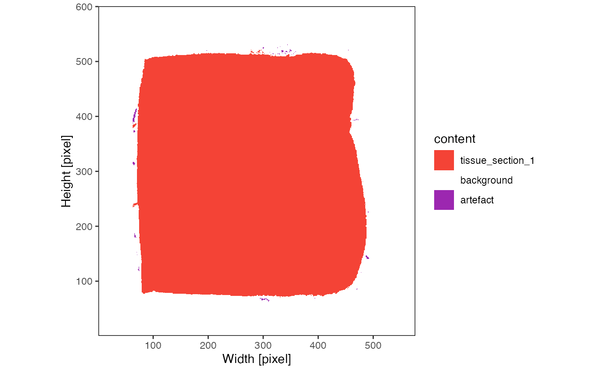
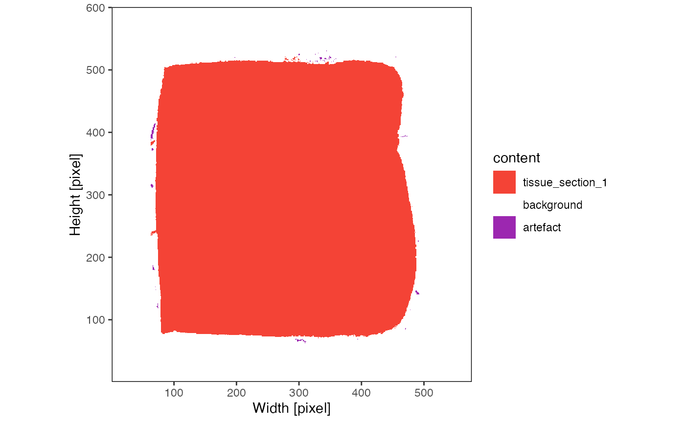
The content can be used to identify the tissue outline based on the
image if method = 'image'. Note that
method = 'obs' identifies the tissue outline based on the
observations. The vignettes on how to initiate and process
SPATA2 objects depending on the platform elaborate on this
option. Both outlines can be identified and stored simultaneously in the
SPATA2 object.
object_t275 <- identifyTissueOutline(object_t275, method = "image")
# plot the outline (if the tissue outline for an image has been identified)
# uppper two plots
plotImages(object_t275, outline = TRUE, line_size = 1)
# are all images aligned with the reference image? - yes they are!
# lower two plots
plotImages(object_t275, outline_ref = TRUE, line_color_ref = "red", line_size = 1)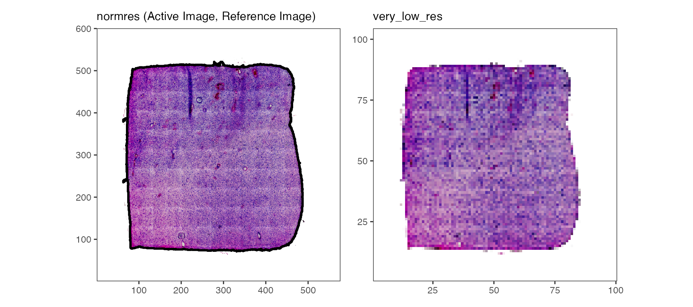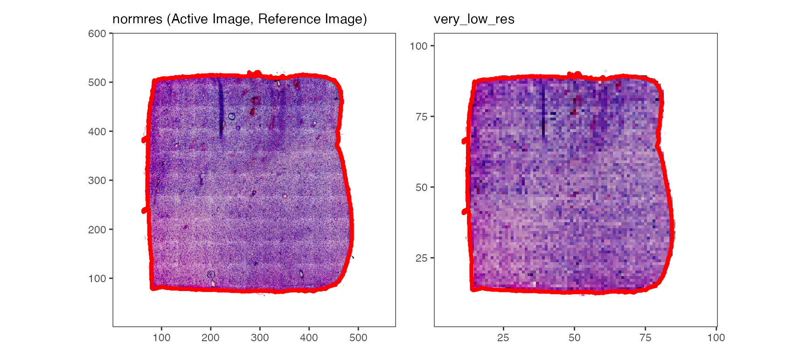
While the tissue outline based on histology can be used for spatial outlier detection, too, it is particularly useful for image alignment.
5. Aligning images
If you want to integrate images from other sources, they might need
to be aligned with the spatial data of the SPATA2 object.
Here, we must introduce the concept of the reference image with
which we refer to the image that is aligned with the observations of the
SPATA2 object (here, barcoded spots). By default, it is the
first image you register or initiate the SPATA2 object
with.
refImage(object_t275)## [1] "normres"
library(EBImage)
# created an image with messed up alignment
badly_aligned_img <-
getImage(object_t275, img_name = "normres") %>%
translate(v = c(25, 20), bg.col = "white")
# no directory specified, unloading wont be possible
object_t275 <-
registerImage(
object = object_t275,
img = badly_aligned_img,
img_name = "badly_aligned"
)
plotImages(object_t275, outline_ref = TRUE, line_color_ref = "black", nrow = 1)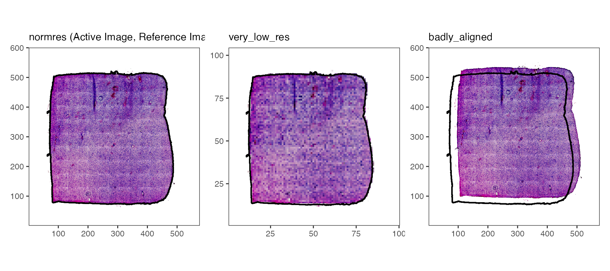
Logically, this means that the added image is not aligned with the
data points of the SPATA2 object which, in turn, means that
integration of molecular data and image features won’t work
reliably.
# left
plotSurface(object = object_t275, img_name = "normres")
# right
plotSurface(object = object_t275, img_name = "badly_aligned") 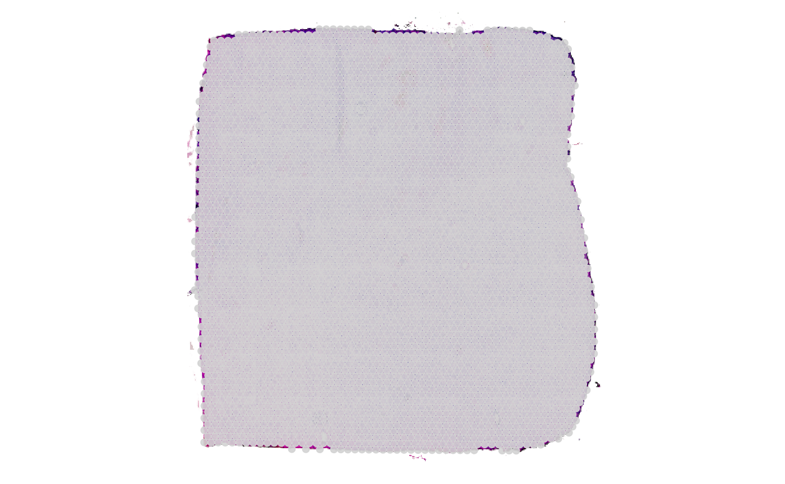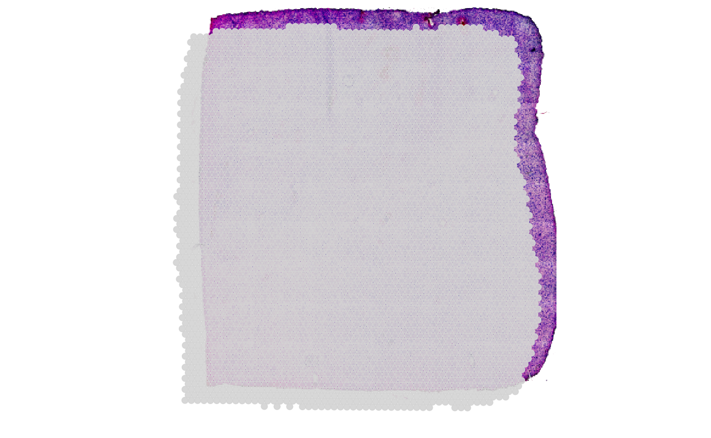
To ensure alignemnt of every single image registered in the
SPATA2 object you can make use of two main functions
alignImage() or alignImageInteractive(). Both
do the following: They change the instructions with which the image is
transformed upon extraction whenever it is used. The function
alignImage() allows to specify the transformations required
to ensure alignment with the coordinates.
# extract the transformation instructions for an image
# currently, the default: no transformation
getImageTransformations(object_t275, img_name = "badly_aligned")## $angle
## [1] 0
##
## $flip
## $flip$horizontal
## [1] FALSE
##
## $flip$vertical
## [1] FALSE
##
##
## $stretch
## $stretch$horizontal
## [1] 1
##
## $stretch$vertical
## [1] 1
##
##
## $translate
## $translate$horizontal
## [1] 0
##
## $translate$vertical
## [1] 0
# add the required transformation to align the image
# see ?alignImage for documentation and more examples
object_t275 <-
alignImage(
object = object_t275,
img_name = "badly_aligned",
opt = "set", # 'set' is the default, 'add' is also possible
transl_h = -25,
transl_v = -20
)
# instructions have changed...
getImageTransformations(object_t275, img_name = "badly_aligned")## $angle
## [1] 0
##
## $flip
## $flip$horizontal
## [1] FALSE
##
## $flip$vertical
## [1] FALSE
##
##
## $stretch
## $stretch$horizontal
## [1] 1
##
## $stretch$vertical
## [1] 1
##
##
## $translate
## $translate$horizontal
## [1] -25
##
## $translate$vertical
## [1] -20
# ... and are applied whenever the image is used if transform = TRUE (default)
# upper three plots
plotImages(object_t275, outline_ref = TRUE, transform = TRUE) +
labs(caption = "transform = TRUE")
# lower three plots
plotImages(object_t275, outline_ref = TRUE, transform = FALSE) +
labs(caption = "transform = FALSE")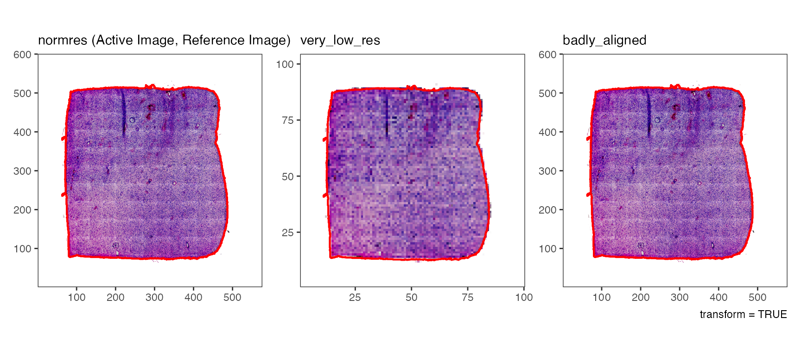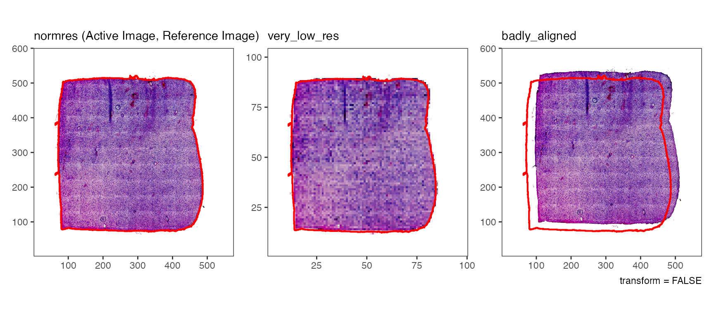
In real life scenarios the exact transformations required are unknown
and trying around over and over again manually with
alignImage() and plotSurface() is cumbersome.
The function alignImageInteractive() gives access to an
interface where you can align a badly aligned image with the outline of
the reference image.
# reset transformations to make the image "badly aligned" again
object_t275 <- resetImageTransformations(object_t275, img_name = "badly_aligned")
object_t275 <- alignImageInteractive(object_t275)
As with alignImaage(), the results of the interactive
alignment are stored in the SPATA2 object.
6. Storing images
In a SPATA2 object, images are not loosely stored.
Actually, every image gets an image-container upon registration. This
image-container is an S4 class named HistoImage. This
objects contain not only the image but information around the image,
such as pixel content, tissue outline, dimensions, file directories
etc.
## [1] "Image"
## attr(,"package")
## [1] "EBImage"
# extrac the image container
hist_img <- getHistoImage(object_t275, img_name = "badly_aligned")
# hist_img is an S4 object of class `HistoImage`
class(hist_img)## [1] "HistoImage"
## attr(,"package")
## [1] "SPATA2"
# ... it contains the image as obtained by `getImage()`
class(hist_img@image)## [1] "Image"
## attr(,"package")
## [1] "EBImage"
dim(hist_img@image)## [1] 576 600 3
# all slot names of the container
slotNames(hist_img)## [1] "active" "aligned" "bg_color" "dir"
## [5] "image" "image_info" "name" "outline"
## [9] "overlap" "pixel_content" "reference" "sample"
## [13] "scale_factors" "transformations"